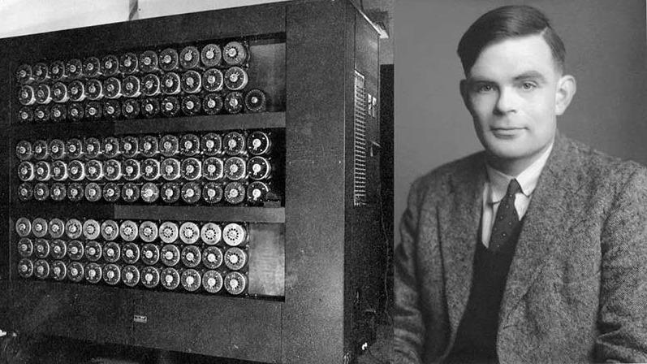

Quem foi Alan Turing?

Alan Turing foi um matemático, lógico e cientista da computação britânico que teve um papel fundamental no desenvolvimento da computação moderna. Ele foi um dos grandes pioneiros da área e ajudou a criar ideias que continuam influenciando a tecnologia até hoje.
O que mais me chama atenção em Turing é o fato de ele ter sido um verdadeiro visionário. Ainda no início dos anos 1940, quando os computadores estavam muito longe de serem como os que conhecemos hoje, ele já trabalhava com ideias que ajudariam a definir o futuro da computação.
Durante a Segunda Guerra Mundial, Turing também teve um papel importante no esforço de guerra britânico, trabalhando na quebra de códigos utilizados pela Alemanha. Por isso, além de enxergá-lo como um gênio da matemática e da tecnologia, também o considero um verdadeiro herói de guerra.
Por que ele me inspira?
Alan Turing me inspira principalmente pela sua capacidade de enxergar possibilidades que outras pessoas ainda não conseguiam imaginar. Ele ajudou a estabelecer algumas das bases da computação moderna e também foi um dos primeiros grandes nomes a discutir a possibilidade de máquinas apresentarem um tipo de inteligência.
Essa visão de futuro me chama muito a atenção, principalmente porque estou começando minha própria caminhada na área de tecnologia. Pensar que uma pessoa, décadas atrás, já estava fazendo perguntas que continuam sendo discutidas até hoje é simplesmente incrível.
Mas a inspiração vai além da tecnologia. Turing também viveu em uma época extremamente cruel para pessoas LGBT. Por ser homossexual, foi perseguido e condenado pela sociedade e pelas leis da época. Em 1952, após ser condenado por "indecência grosseira", ele foi submetido à castração química.
Mesmo diante de tudo isso, sua história continua sendo lembrada e sua contribuição para a humanidade permanece. Para mim, Turing representa não apenas genialidade, mas também a importância de poder existir e ser quem você é, mesmo quando a sociedade tenta impor limites sobre isso.
Alan Turing e a inteligência artificial
Uma das coisas que mais me impressionam em Turing é que ele começou a pensar sobre a possibilidade de máquinas apresentarem comportamento inteligente muito antes de a inteligência artificial se tornar algo presente no nosso cotidiano.
Em 1950, ele publicou o artigo Computing Machinery and Intelligence, no qual começa justamente questionando se as máquinas poderiam pensar.
O Jogo da Imitação
Se você quiser conhecer um pouco mais sobre a história de Alan Turing, uma boa opção é o filme O Jogo da Imitação, lançado em 2014. O filme é estrelado por Benedict Cumberbatch e conta parte da história de Turing durante a Segunda Guerra Mundial, principalmente seu trabalho para ajudar a decifrar os códigos da máquina Enigma.
O filme ajudou a tornar a história de Turing mais conhecida pelo público. Apesar de ser baseado em acontecimentos reais, algumas partes foram adaptadas para o cinema, então ele não deve ser considerado um retrato completamente fiel de todos os acontecimentos da vida de Turing.
Quer assistir?
Você pode verificar onde o filme está disponível no Brasil pelo JustWatch:
Onde assistir O Jogo da Imitação
O filme também possui uma página no Prime Video:
Citações
"Proponho que consideremos a questão: 'Podem as máquinas pensar?'"
Alan Turing, "Computing Machinery and Intelligence" (1950)
Fonte da primeira citação - Carnegie Mellon University
"Parece provável que, uma vez iniciado o método de pensamento das máquinas, não demoraria muito para que elas superassem nossas frágeis capacidades."
Alan Turing
Quer saber mais?
Se quiser conhecer melhor a história de Alan Turing, sua contribuição para a computação e sua relação com o desenvolvimento da inteligência artificial, você pode acessar a matéria da National Geographic Brasil: